This is the easiest way to start weaving — no loom purchase required. You can build your own from a piece of cardboard and start within an hour. It's a great beginner project, and a great one to make with kids.
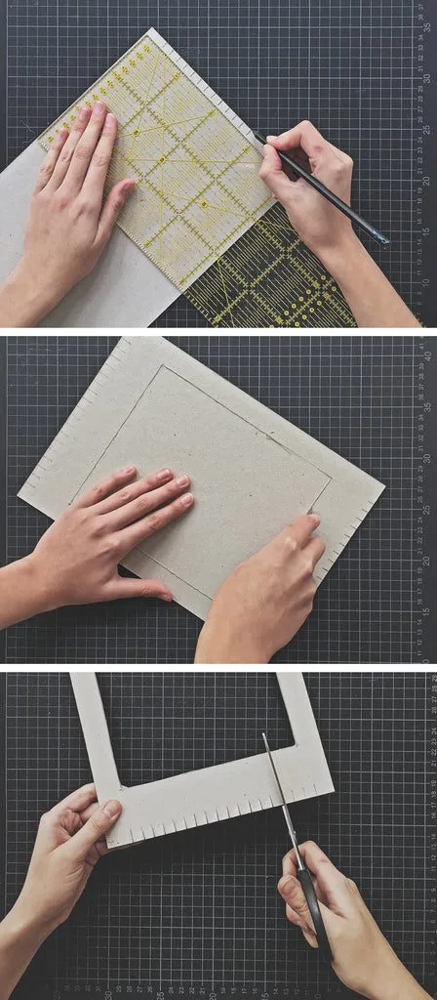
The tools you need
All you need is a piece of cardboard (A4 size), a cutter, scissors, a ruler and a pencil, and a wool needle. I also recommend a cup of tea to stay hydrated, because it's easy to lose track of time while weaving.
Use your favorite yarn to weave with. The threads fixed to the loom (vertical) are called warp; the threads we will weave in between warp threads (horizontal) are called weft.
For warp I recommend cotton string or any other non-stretchy yarn. I used my own plant-dyed wool yarns as weft.
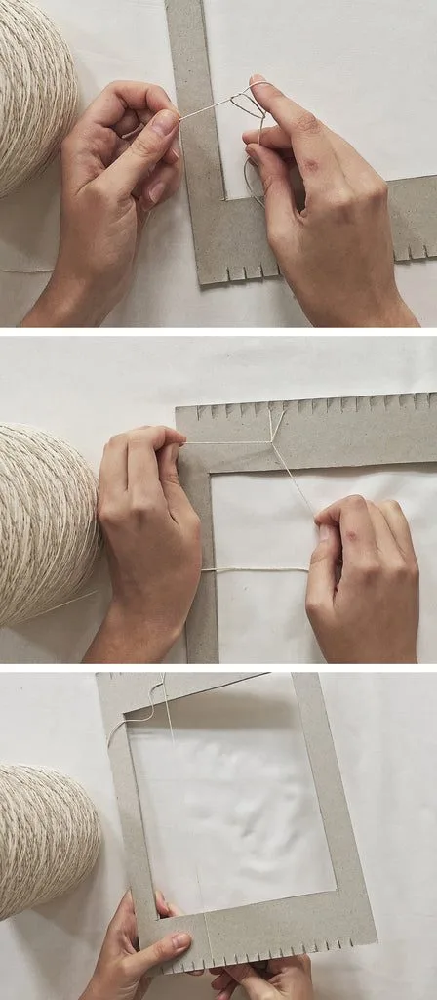
Make your own loom
I used a thick piece of cardboard to make my loom. Remember that your loom needs to be stable enough not to be bent by the tensioned warp, so don't choose cardboards that are too wobbly.
Draw short lines spaced evenly (1 cm) at the top and the bottom of the cardboard. Be careful to keep identical distances from each side of your loom, so your warp can be stretched in a straight line.
Cut out a window in the middle of the loom. It will allow you to see the back side of your weaving. We will need it later to weave in the loose ends. I recommend leaving at least 2 cm of border around your window, so the loom stays firm. The window doesn't need to be perfect, so don't stress if your cutting lines aren't super straight.
Use scissors to make small cuts at the top and the bottom of the loom. This is where the warp will be attached.
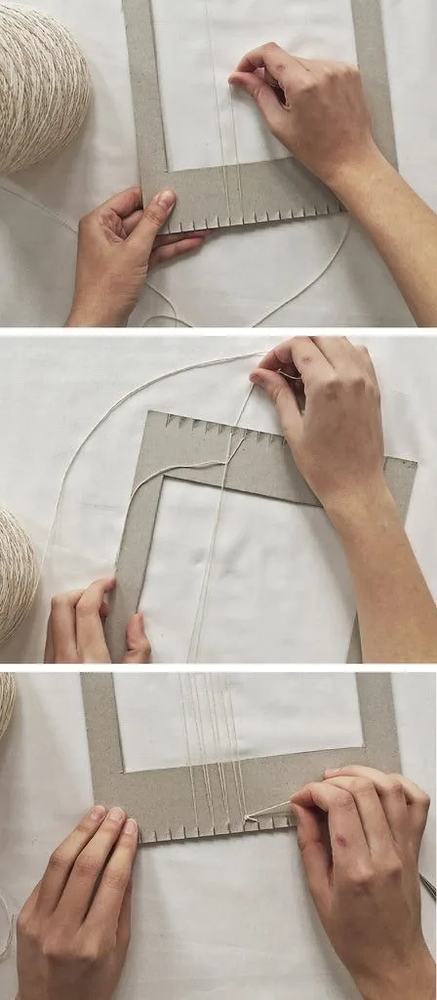
Attach the warp
Make a little loop on your finger and attach it to one of the “teeth” of your cardboard loom. Secure the loop by pulling both strings to prevent the warp from loosening. Now pull the long thread all the way down to the opposite end of the loom.
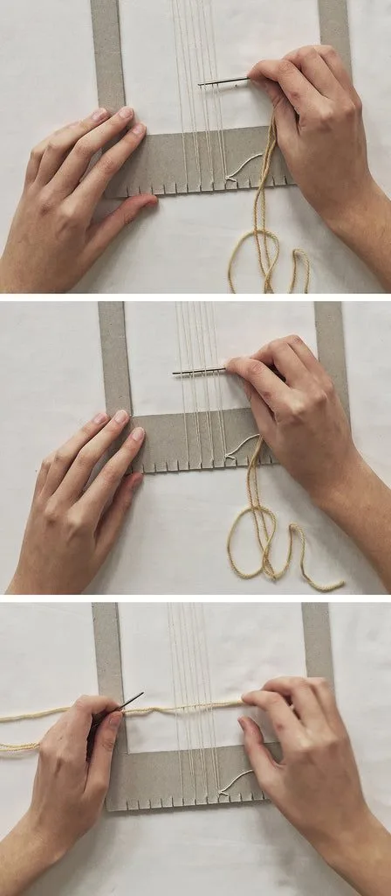
Tension the warp
Wrap the thread around the bottom “tooth.” Your warp should be tensioned, but don't pull too hard, otherwise the cardboard might bend. Be careful to tension all threads evenly.
Go back with your thread to tooth number one. Wrap your thread behind it and pull it to the bottom of the loom again. Repeat as many times as you need. Secure your last thread with a loop.
Note that (almost) every groove holds two threads. You can warp your loom less dense if you wish, but it's going to affect the look and stability of your weaving.
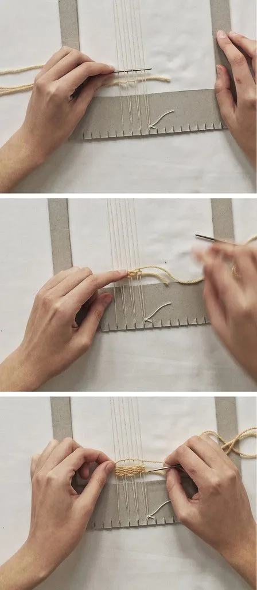
Start weaving
This is where the real adventure begins. Choose your favorite yarn and thread it through a wool needle. You can use just your fingers to place the weft between the warp too, but working with a needle makes it easier.
Put your needle under the first thread, over the second one, under the third one, until you reach the end. Leave a little tail of yarn at the end — we are going to use it later to hemstitch the edge.
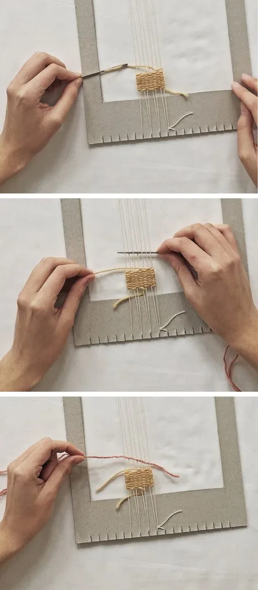
Weaving the weft between the warp
The second row is woven the other way around. If the needle was under the warp in the first round, now it's over it; if it was over it, now it's under. In my case (7 warp threads) my yarn in the first row ended under thread number 7, so in the second row it goes over it and under thread number 6.
Alternate your rows until you've woven enough of one color. In smaller weavings like this one I use my fingers to “beat” the weft down, so that the threads lay next to each other. When making a wall hanging, I highly recommend using a weaving fork to speed up the process.
Be careful not to pull your weft too much. A good idea would be to create a small “bubble” with your thread and beat it down. This way your weft stays nice and relaxed between the warp threads. Why is that important? If you tension your weft while weaving, it will distort your warp and your weaving will get wavy when taken off the loom. Nobody wants that.
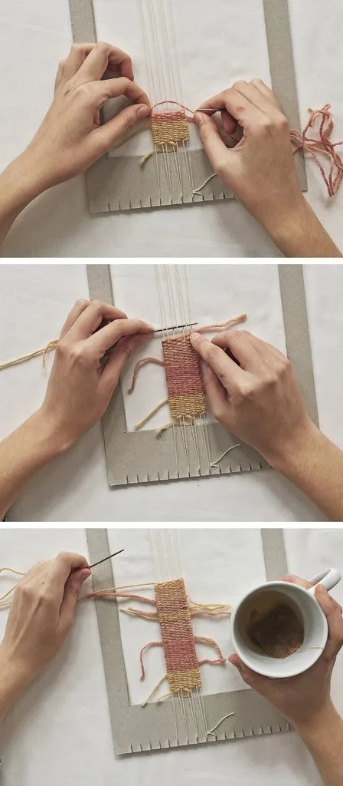
Changing threads
After you finish your first block, let the end of your thread hang freely between the warp threads. Bring it to the back of your weaving, a few warp threads away from the edge. We are going to weave it in later.
(Some people weave the loose ends into the edges of their weavings, but for small projects like this one it's better to hide them in the middle. This way the edges stay straight and neat.)
Start your next weft row from the place where your previous block finished. I overlapped both colors on warp thread number 4. Keep weaving the usual way. Remember to leave a tail long enough to hide it later.
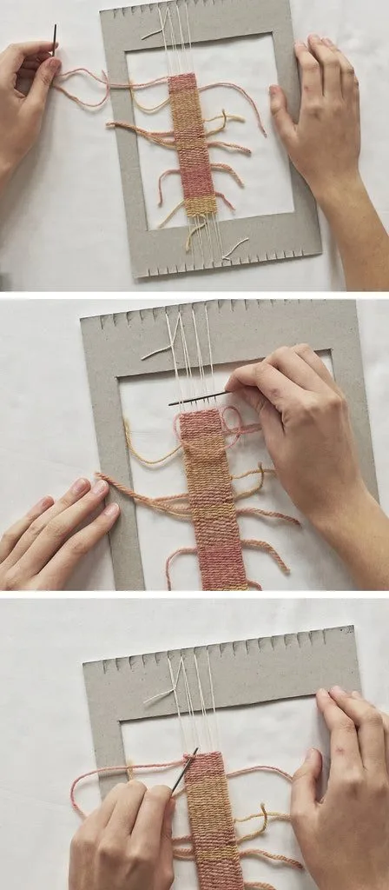
Weaving as a meditation
Keep going for as long as you want, with as many colors as you like. Be careful — the more blocks you make, the more loose ends you have to hide later. And remember to stay hydrated (nothing goes better than yarn and a cup of tea).
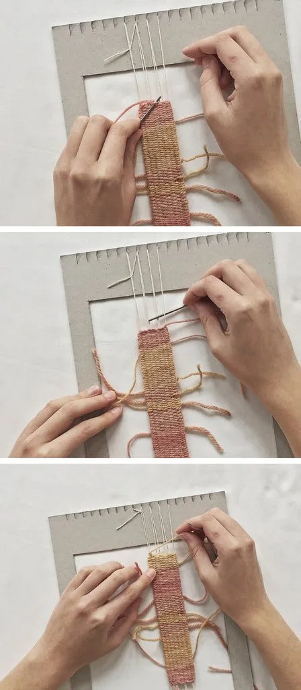
Finishing the ends
When your weaving part is finished, it's time to secure your work. Hemstitch every two warp threads together. You'll do so by making a loop over them and pushing the needle through the last row.
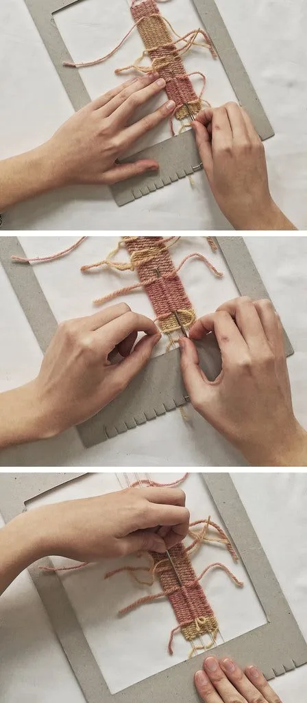
Hemstitch both ends
If your warp thread number is odd, just make a loop on your last warp thread. After you finish, turn the loom and hemstitch the other end the same way. Your weaving is secure; now we need to make it look pretty.
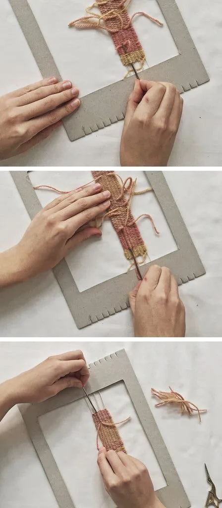
Weave in loose ends
Weaving in loose ends is the least favorite part of my weaving practice, but, to be fair, it's also very satisfying. If you're making a wall hanging, you can consider leaving your ends the way they are, but for a small piece like this one, it's important to hide them.
Push the needle through all of the block rows (pink) to keep a nice, clean surface. Now pull the end of the previous block (orange) through the eyelet of the needle. Pull the (orange) weft end all the way through the (pink) block.
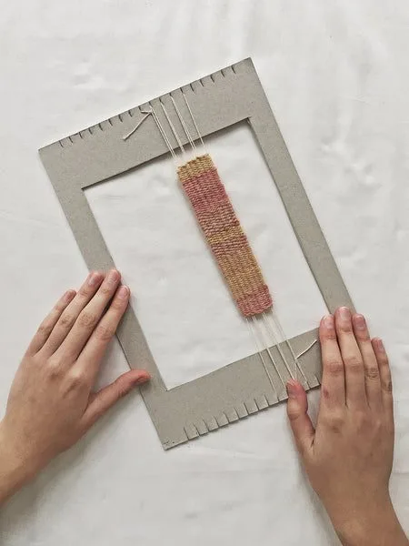
How to tidy up
Hide all the loose ends and clip them carefully as soon as they're woven in. Be careful not to pull two ends through one column, otherwise some parts of your weaving will get much thicker than others. We are trying to make them disappear and create a nice, uniform surface.
I always hide ends of one block into the other block. This way all blocks stay attached to each other and don't slide or move on the warp.
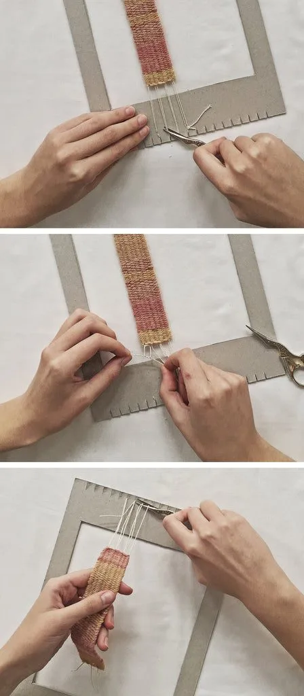
Done
Your weaving is finished. Now it's time to carefully take it off the loom without destroying it. You can reuse the loom as long as it lasts.
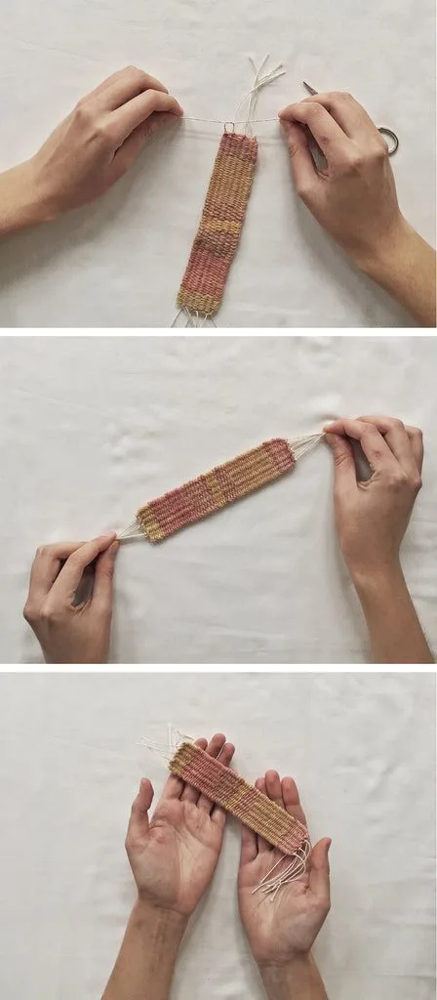
Take your weaving off the loom
Cut the first two warp threads and make a loop. Don't pull too hard — you don't want to move the weft. Continue until all threads are tied.
Congratulations
Your weaving can be transformed into anything you want now. Narrow weavings like this one can be used to make bracelets, bookmarks, ornaments, pacifier holders, and more.